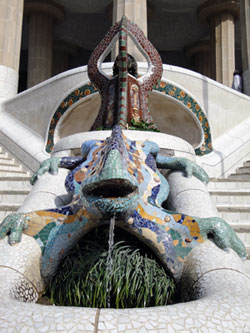

Destinations: Spain and China
We are featuring two trips this month. Our Spain trip will depart on May 5 for 16 days. We will arrive in Madrid, where you will check in at the Intercontinental Hotel. The next morning, we will begin your tour with the Royal Palace and end the day at the Prado Museum, housing works by Spain's great masters: Goya, Velazquez, and El Greco. We will depart from Madrid and visit Toledo, Granada, and Cordoba, some of Spain's most picqueresque cities. Granada features the 13-century palace Alhambra with its beautiful gardens. Jerez, the home of the Andalusioan School of Equestrian Art, is our next stop. You will view a performance of the "dancing stallions" and visit a bodega. Next is Seville, where you will have a change to attend a traditional flamenco show. You may decide to splurge on an authentic flamenco dress! We end the visit with Barcelona where you will stay near the Barcelona Olympic Port. You will view the work of Spain's most famous architect: Gaudi, as you visit the unfinished Sagrada Familia Basilica along with the Parc Guell, a UNESCO World Heritage Site.
 The second trip we are featuring is to China. We will depart on June 20 and arrive in Shanghai to stay three nights at the Shanghai Four Seasons Hotel.Shanghai sights will include a visit to the Bund, the Shanghai Museum, and a performace of the Shanghai Acrobats. From Shanghai we will depart for our three-day voyage down the Yangtze River on the River Dancer, where we will visit The Three Gorges. Upon disembarking, we will travel to Xian to view the Terra Cotta Warriors and explore the Shaanxi Museum. Our tour ends in Bejjing with the Forbidden City, Tiananmen Square, and a day trip to the Great Wall of China.Our experienced guides all speak fluent English. Our team includes ornithologist JoAnne Rife, zoologist Jenny Williams, anthropologist Christina Elizabeth, and naturalist Richard Newland. Private air transport will whisk us to more distant game reserves with an opportunity to see the native Pandas. This is truly a trip of a lifetime. Make your reservations now!
The second trip we are featuring is to China. We will depart on June 20 and arrive in Shanghai to stay three nights at the Shanghai Four Seasons Hotel.Shanghai sights will include a visit to the Bund, the Shanghai Museum, and a performace of the Shanghai Acrobats. From Shanghai we will depart for our three-day voyage down the Yangtze River on the River Dancer, where we will visit The Three Gorges. Upon disembarking, we will travel to Xian to view the Terra Cotta Warriors and explore the Shaanxi Museum. Our tour ends in Bejjing with the Forbidden City, Tiananmen Square, and a day trip to the Great Wall of China.Our experienced guides all speak fluent English. Our team includes ornithologist JoAnne Rife, zoologist Jenny Williams, anthropologist Christina Elizabeth, and naturalist Richard Newland. Private air transport will whisk us to more distant game reserves with an opportunity to see the native Pandas. This is truly a trip of a lifetime. Make your reservations now!